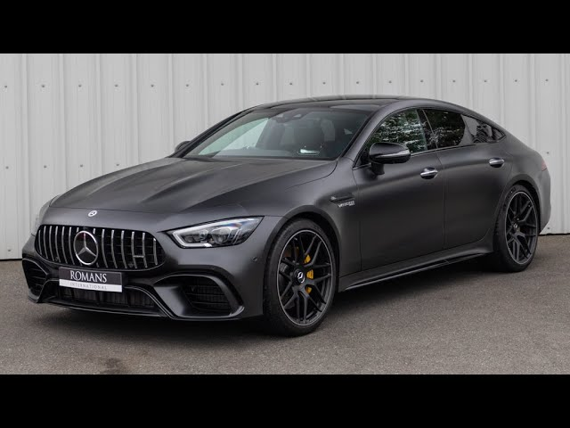
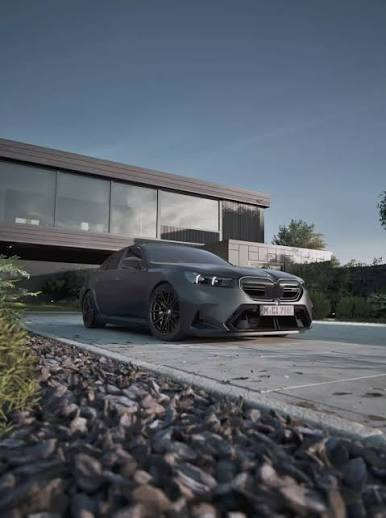
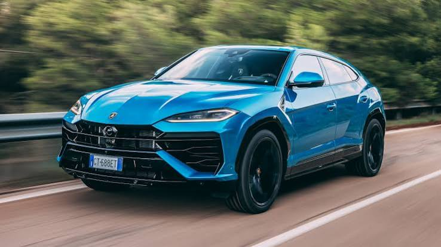

Favoriete Auto's
-
AMG GT 63S graphite mango

AMG GT 63S -Dit is een sportieve
auto van Mercedes-Benz met een krachtige V8-motor
-
BMW M5 competition

BMW M5 cometition -Deze auto is speciaal doro zijn
combinatie van luxe en veel vermogen.
-
Lamborghini Urus

Lamborghini Urus- Deze auto is een SUV met 4.0L twin turbo.